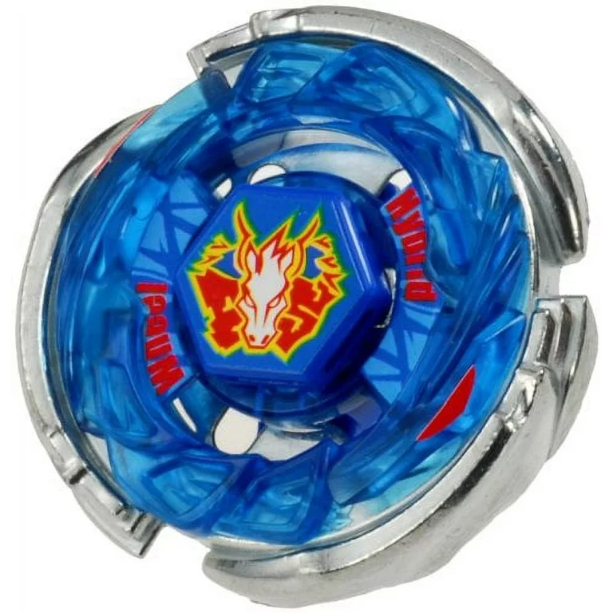

Beyblade
 Beyblade (ベイブレード, Beiburēdo, diminutive Bey, from the diminutive of beigoma) is a line of spinning-top toys originally developed by Takara, first released in Japan in July 1999, along with its debut series. Following Takara's merger with Tomy in 2006, Beyblades are now developed by Takara Tomy. Various toy companies around the world have licensed Beyblade toys for their own regions, including Hasbro in Western countries, Sonokong in South Korea, and Takara Tomy for most Eastern countries.Both the toys and their names were inspired by the beigoma, a traditional Japanese spinning top. The concept is similar to Battling Tops, another spinning top game developed in 1968. The toy line was introduced with an accompanying manga series of the same name in 1999. In 2002, Hasbro began to sell Beyblade toys internationally (under license from Takara) along with a coordinated country-by-country release of localized versions of the TV series. On July 12, 2008, Takara Tomy released Metal Fight: Beyblade, the second iteration of the toy. The third iteration, titled Beyblade Burst, was released by Takara Tomy on July 18, 2015. The fourth iteration of the toyline, Beyblade X, was released on July 15, 2023.Games and Rules
Aside from informal play, a game with specific rules was published for the initial toy line. The guidelines may undergo occasional modifications based on the specific circumstances and the individuals participating. In the official competition, a minimum of two players engage in the game. Each participant is permitted a maximum of three Beyblades; however, it's important to note that once a match commences, swapping out parts is strictly prohibited. For each battle within a match, players retain the flexibility to select any of their three available Beyblades.In Metal Fight Beyblade, a points system was introduced. In the Beyblade Burst line of toys, Hasbro releases its own rule-set for its toy line. In general, the first player to 3 points will win a match. [1]Players receive points based on the appearance of their Beyblade, as the names of certain Beyblades can differ depending on the region. The scoring system takes into account both Hasbro and Takara Tomy terminologies, with points awarded accordingly. The Beyblade's visual appeal becomes a key factor in determining the player's score, as the Hasbro terminology is followed by the Takara Tomy names. This ensures a fair evaluation, considering the regional variations in Beyblade names. The scoring process reflects the diverse naming conventions used by both Hasbro and Takara Tomy, enhancing the overall fairness and inclusivity of the competition. In essence, the evaluation system accommodates the unique c haracteristics of Beyblades from different regions. One point is awarded if the opponent's Beyblade stops spinning (Sleep Out/Survivor/Spin Finish). One point is awarded if the opponent's Beyblade is knocked out of the stadium or falls into a pocket in the stadium (Stadium Out/Ring Out/Over Finish/KO/Knockout Finish). Beginning with Beyblade Burst, two points are awarded if the opponent's top disassembles is "burst" during a battle (Crash Out/Burst Finish). Beginning with Beyblade X, Over Finishes count for two points, and three points are awarded if the opponent's top is knocked through the Xtreme Pocket in the special Xtreme Stadium (Xtreme Finish). In the event of a draw (both Beyblades exited the ring simultaneously and get stuck there, stop spinning simultaneously, or burst at the same time), no points are awarded to either player. The stadium's pockets and entrance are sometimes referred to as "extended play area" as opposed to "primary play area" since if a Beyblade gets into one of the pockets but is able to escape, it will not count as a knockout. For the stadium's entrance, if a Beyblade flies there, gets caught there and goes around the stadium but doesn't fall out of the stadium, it will also not be counted as a knockout
Types of Beyblades
There are four main types of Beyblades. There are Defense types, Attack types, Stamina types, and Balance types. T he first three of those types have rock-paper-scissors style effectiveness, with Defense generally supposed to be effective against Attack, Attack against Stamina, and Stamina against Defense. However, due to the high variability of the custom designs, especially in the metal series, this is not a hard rule. Balance types may be strong or weak to any of the others depending on specific parts. However, they generally don't exceed in any aspect.
Attack
Attack Beyblades are great at in attacking other Beyblades. They are used to knock out other Beyblade, or in the case of the burst series, burst the other Beyblades at the cost of having poor stamina. They tend to outperform Stamina Beyblades, which have a lack of defense. Attack Beyblades are heavy as to be able to knock others out . They usually have flat or rubber performance tips and have layers that can grip the opponent.Defense
Defense Beyblades are used to withstand attacks. They tend to travel slowly and are heavier than other types, resulting in opponents being deflected. Their weight also causes them to launch slower, resulting in less stamina. They tend to wear down Attack-types but are outlasted by Stamina. They tend to be made of thicker metals and have wide ball-like performance tips.Stamina
Stamina Beyblades attempt to outlast opposing Beyblades. They are used to out-spin the enemy Beyblade. In exchange for a lack of power, they can outlast other types of Beyblades, making them naturally advantageous over Defense-Types, which focus on resisting hits. They have sharp cone-shaped performance tips.Balance
Balance Beyblades specialize in a combination of the other three types listed above, giving them no glaring strengths or weaknesses. Regardless of their strength, they combine Attack, Defense, and Stamina Beyblades but do not excel at any of them. Some Balance Beyblades have Attack, Defense, and Stamina Modes, and their performance tips can vary.Beybattle
An arena called a Beystadium is sold by both brands Takara Tomy and Hasbro. It is shaped like a shallow plastic bowl but may have other features dependent on the purpose of the particular stadium. Different stadiums were released in different markets. Brands Takara Tomy and Sonokong produce Beystadiums similar to those featured in the manga and anime adaptations, with open sections in the walls and openings on the sides to launch into. Hasbro produces stadiums with walls that are about 3.7 in (94 mm) tall and pockets that count as a ring-out instead. Common features of a Beystadium include a circular shallow impression where the edge is called the tornado ridge, which allows Attack type Beyblades to move around quickly without accidentally knocking themselves out, and cyclone/tornado’s points, which are recessed disks in the stadium floor that spin freely to add randomness to a battle. Other features may be specific to the series that the Beystadium is released in, like the rails from the Beyblade Burst Slingshock toy system, the large, almost bowl-like HyperSphere toy system, the noticeably taller Speedstorm toy system, and QuadDrive toy system, which features a Low Mode and High Mode not unlike its Takara Tomy counterpart along with a detachable, separate Armor tip on the driver, and the similar QuadStrike toy system, the Armor Tips and Stadiums of which are similar to drivers from the HyperSphere system. The metal series stadiums also have a "secondary slope", which is a small area about two centimeters thick that isn't a curve that exists between the tornado ridge and the centre of the stadium and is right next to the tornado ridge. The secondary slope allows Attack Beyblades to perform a circular pattern that goes through the centre of the stadium as opposed to circling around the Beyblade in the middle that allows them to knock the Stamina Beyblade that stays in the middle out easier. This pattern is called the "flower pattern" since the path of the Beyblade resembles a flower.
Launching
A Beyblade Launcher (often referred to as a BeyLauncher) is used to launch the user's Beyblade into battle. Select launchers have different levels of power depending on the gears inside of them and the user's own launch strength. Launchers differ in size and shape, with some of them using Ripcords (long sticks of plastic with grips on the end and teeth on the sides to strike the gears of the launcher that launches the user's Beyblade when pulled) and others using Strings (long strings with grips on the end that are connected to a gear that has a retracting mechanism that strikes the gears of the launcher that launches the user's Beyblade with slightly more power when pulled). String Launchers are preferred by most players because of their launch power. Different series such as 2000/Original, Metal Fight/Fusion, and Burst launchers cannot be used with others. Launching is often accompanied by a catchphrase. In the Takara Tomy version, this would be "3, 2, 1, Go Shoot!" (3、2、1、ゴーシュート!); in the Hasbro version, this would be "3, 2, 1, Let it Rip!"[1]